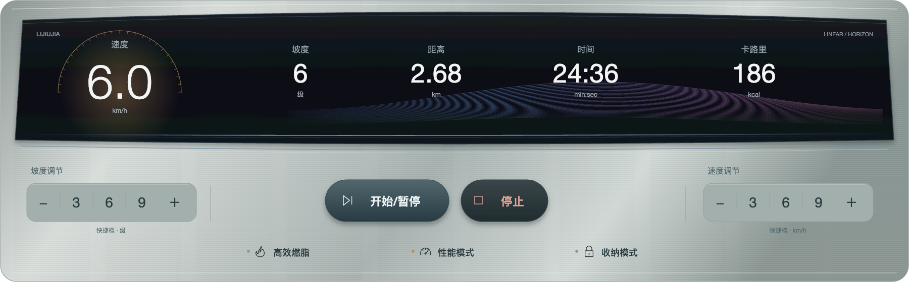
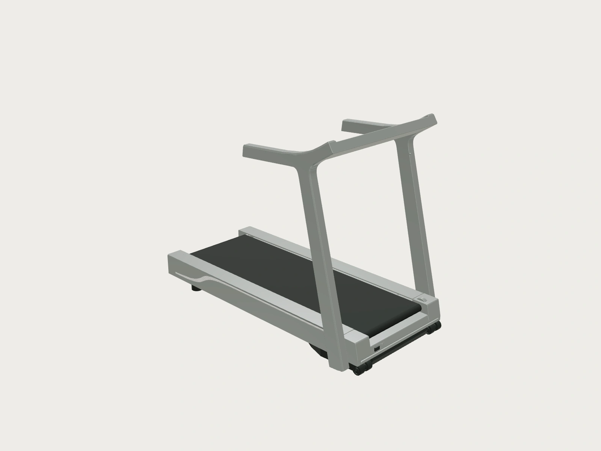

一款参照 YU7 仪表台感觉的固定面板。深色贯穿信息带、突出的速度主读数、连续蓝紫渐变线图，与钛金属操作下沿共同组成整块面板。

速度作为左侧主读数；坡度、距离、时间、卡路里沿同一视线依次展开，固定线图把信息连成整体。
深色用在信息带，钛金属保留在外框和操作下沿。冷白数字、蓝紫线图与少量琥珀点缀构成克制的色彩。
坡度／速度加减及各自 3／6／9 快捷档，开始／暂停、停止、高效燃脂、性能模式、收纳模式，均有独立固定位置。

沿用新 STEP 的 Y 形上端与横桥语境。当前是独立面板视觉提案，尚未按有效区尺寸安装到模型；原始几何保持不变。
视觉参考：小米 YU7 官方内饰与天际屏展示 ↗。本稿提炼其横向层次和信息组织，不采用汽车的反射式显示硬件，也不复制导航或娱乐功能。